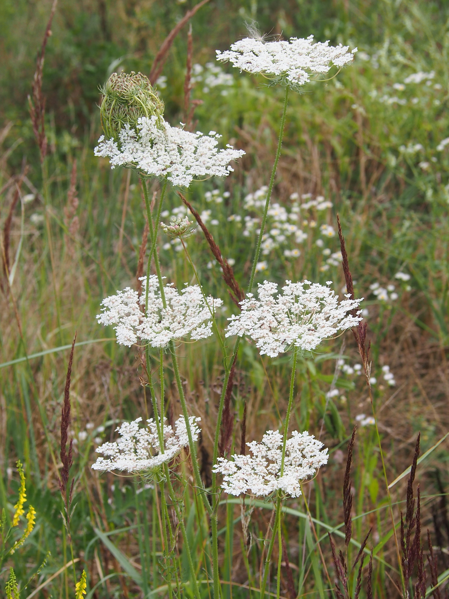
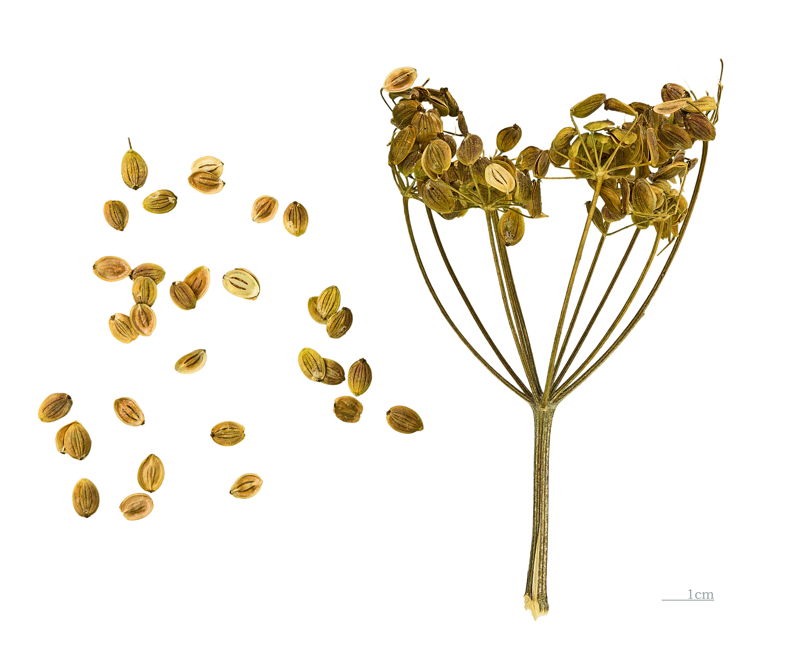
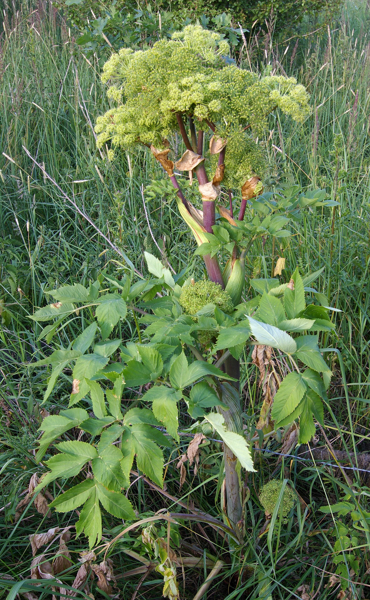
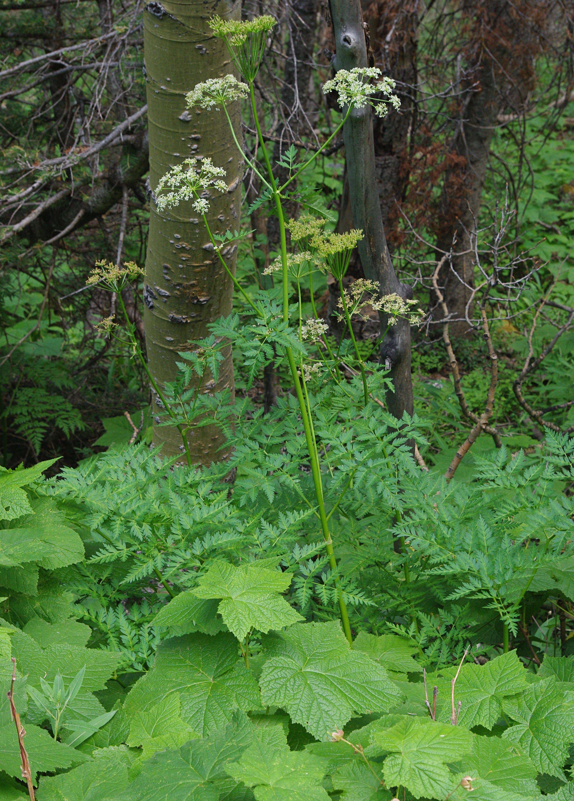

Apiaceae
celery/carrot/parsley family
|  Daucus carota (carrot) from Wikimedia Commons by Agnieszka Kwiecień, Nova - Own work, CC BY-SA 4.0 |
 Conium maculatum (hemlock) from Wikimedia Commons by Djtanng - Own work, CC BY-SA 4.0 |
 Ferula foetida (asafoetida) from Wikimedia Commons by Patrick Verhaeghe, Public Domain |
 Pastinaca sativa (parsnip) seeds from Wikimedia Commons by Didier Descouens - Own work, CC BY-SA 4.0 |
{kind=link}
{kind=link}
botanical characteristics
Botany in a Day, p. 179-81
- growth form
- mostly herbs, rarely shrubs or trees
- stems/leaves
- hollow stems
- pinnate leaves
- flowers
- compound umbels are the best pattern for identifying this family
- all stems of the flower cluster radiate from a single point at the end of a stalk
- at the end of each flower stem there is another umbel of smaller stems
- small flowers have 5 sepals and 5 petals
- compound umbels are the best pattern for identifying this family
- reproductive structures
- 5 stamens
- ovary is positioned inferior
- 2 united carpels with partition walls
- ovary matures as a schizocarp, which splits into individual one-seeded carpels (mericarps) when dry
distribution
Botany in a Day, p. 179-81
- about 430 genera and 3700 species worldwide
- about 75 genera are native to North America
"Apiaceae", Wikipedia
- family is estimated to have originated during the Late Cretaceous, likely in Australasia
- many species are widely cultivated as food crops
ecological roles
"Apiaceae", Wikipedia
- the black swallowtail butterfly Papilio polyxenes uses the family Apiaceae for food and host plants for oviposition
- the 22-spot ladybird is also commonly found eating mildew on these plants
common pharmacological constituents
Botany in a Day, p. 179-81
- Apiaceae family is rich in volatile oils
"Apiaceae", Wikipedia
- many species in the family Apiaceae produce furanocoumarins, which are phototoxins that sensitize human skin to sunlight
- of all the plant species that have been reported to induce phytophotodermatitis, approximately half belong to the family Apiaceae
"Apiaceae essential oils and their constituents as insecticides against mosquitoes—A review", ScienceDirect
- the Apiaceae family is rich in phytochemical compounds and secondary metabolites such as tannins, phenolic acids, flavonoids, coumarins, terpenoids and triterpenoid saponins, polyacetylenes, carotenoids, polyacetylenes, sesquiterpenoids, and steroids
- essential oils can be obtained with high yields
- seeds are a source of fatty acids (such as petroselinic acid and linoleic acid) and other compounds such as cellulose, lignin, pectin, flavonoids, coumarins, carotenoids, terpenoids, but also quinones, sugars, and lactones
"Angiosperm families - Umbelliferae Juss.", DELTA
- sugars transported as sucrose (Bupleurum); inulin not found (umbelliferose recorded); not cyanogenic; polyacetylenes recorded (falcarinone); alkaloids present, or absent (poisonous umbellifers usually toxic via polyacetylenes); anthraquinones detected (Bupleurum, Heracleum); polyacetate derived; arbutin absent; iridoids not detected; saponins/sapogenins present, or absent; proanthocyanidins absent; flavonols present, or absent; kaempferol, or kaempferol and quercetin (mostly both); ellagic acid absent (10 species, 10 genera); aluminium accumulation not found; sieve-tube plastids S-type
patterns in medicinal actions
- gentle stimulating action on the digestive and respiratory systems, as well as the reproductive system (esp. female)
- much of the medicinal value lies either in nutrients (vitamins, minearls, starches, etc. stored in stable stalks/taproots) or volatile oils (highly complex and multifarious and sensitive)
- defenses required to protect nutritional stores
Botany in a Day, p. 179-81
- volatile oils make many Apiaceae plants diaphoretic, decongestant, expectorant, antipyretic, antiviral, and carminative
- food crops in this family are nutritive
- some plants in this family are emmenagogues
"Apiaceae essential oils and their constituents as insecticides against mosquitoes—A review", ScienceDirect
- largely used as traditional remedies to treat several disorders, such as gastrointestinal, reproductive, and respiratory diseases
- uses go from gastrointestinal diseases, such as diarrhoea and vomiting, to neurological disorders
- also show antiulcer and carminative effects, but also antiseptic and antispasmodic properties
- antioxidant activity of several Apiaceae essential oils are also well documented
traditional/cultural uses
"Apiaceae", Wikipedia
- as food
- parsnip and carrot produce large edible tap roots
- stalks and basal bulbs of fennel and celery
- many species produce essential oils in their leaves or fruits and as a result are flavourful aromatic herbs and spices
- parsley, coriander, culantro, dill, fennel, cumin, caraway
- almost every widely cultivated plant of this group is a considered useful as a companion plant
- the flowers are well suited for ladybugs, wasps, and flies, which then prey upon insect pests on nearby plants
- some of the members of this family produce scents that may mask the odors of nearby plants, thus making them harder for insect pests to find
- poisonous members of the Apiaceae have been used for a variety of purposes globally
- Oenanthe crocata has been used as an aid in suicides, and arrow poisons have been made from various other family species
- Dorema ammoniacum, Ferula galbaniflua, and Ferula moschata are sources of incense
- the woody Azorella compacta has been used in South America for fuel
warnings
Botany in a Day, p. 179-81
- the Apiaceae family includes some of the deadliest plants in North America (and the world)
- one must get a positive identification for any compound umbel one finds as there are several poisonous lookalikes for nontoxic plants in this family
- e.g. hemlock is a very strong lookalike for wild carrot
- many plants produce furanocoumarins, which can cause contact dermatitis, especially when exposed to sunlight
extra information
Botany in a Day, p. 179-81
- also known as the Umbelliferae family
prominent genera
- Anethum (incl. dill)
- Angelica (angelicas)
- Anthriscus (incl. chervil)
- Apium (incl. celery)
- Carum (incl. caraway)
- Centella (incl. gotu kola)
- Cicuta (water hemlocks)
- Conium (hemlocks)
- Coriandrum (corianders)
- Cuminum (cumins)
- Daucus (carrots)
- Ferula (giant fennels, incl. asafoetida)
- Foeniculum (fennels)
- Ligusticum (incl. osha, lovage)
- Pastinaca (parsnips)
- Petroselinum (parsleys)
- Pimpinella (incl. anise)
plant highlights
see list of materia medica entries here
Angelica archangelica
|  from Wikimedia Commons by Christian Fischer, CC BY-SA 3.0 |
common names: angelica, wild celery en español: angélica |
{kind=link}
description
"Angelica archangelica", Wikipedia
- leaves consist of numerous small leaflets divided into three principal groups, each of which is again subdivided into three lesser groups
- edges of the leaflets are finely toothed or serrated
- flowers, which blossom in July, are small and numerous, yellowish or greenish, are grouped into large, globular umbels that bear pale yellow, oblong fruits
distribution
"Angelica archangelica", Wikipedia
- grows only in damp soil, preferably near rivers or deposits of water
- grows wild in Russia, Finland, Sweden, Norway, Denmark, Greenland, the Faroe Islands, and Iceland, mostly in the northern parts of the countries
- cultivated in France, mainly in the Marais Poitevin, a marsh region close to Niort in the department Deux-Sèvres
- commercially available angelica is often sourced from Hungary, Romania, Bulgaria, Germany and Poland
medicinal/magical uses
"Angelica archangelica", Wikipedia
- cultivated as a vegetable and medicinal plant from the 10th century on
- became popular in Scandinavia in the 12th century and is used especially in Sámi culture
- used to flavor liqueurs or aquavits, (e.g., Chartreuse, Bénédictine, Vermouth, and Dubonnet), omelettes and trout, and as jam
- long bright-green stems are also candied and used as food decoration
- unique among the Apiaceae for its pervading aromatic odor, a pleasant perfume entirely different from fennel, parsley, anise, caraway, or chervil
- has been compared to musk and to juniper
- among the most common botanicals used in gin distillation, often used in concert with juniper berries and coriander as a chief aromatic characteristic for gin
The New Age Herbalist, p. 117
- aromatic, bitter taste eases indigestion, griping, colic, and flatulence
- stimulating and warming to the digestion and stimulating to the circulation
- antibacterial, antifungal, antimicrobial, antiseptic
- diaphoretic, diuretic and a warming expectorant useful for asthma and bronchitis made worse by damp, cold conditions
- antispasmodic, useful for treating painful periods
The Modern Herbal Dispensatory, p. 174
- aromatic, decongestant, digestive tonic, warming, drying
- helps warm a cold, stiff, weakened body; especially warming to the stomach, spleen, and intestines
- useful for poor digestion, colic, and intestinal cramps
- promotes perspiration, useful for reducing fever; helpful for recovering from colds, flu, and congestion in the lungs
- helps regulate menses and balance hormones
- uplifting, helpful for stagnant depression
- externally for bruises, sprains, and muscle and joint pain
preparation methods
The Modern Herbal Dispensatory, p. 174
- decoction
- tincture
- glycerite
- powder
warnings
The New Age Herbalist, p. 117 | The Modern Herbal Dispensatory, p. 174
- several poisonous lookalikes
- coumarins bergapten and xanthotoxol can cause photosensitivity
- avoid large doses and prolonged use
- not for use during pregnancy or while nursing
- contraindicated for heavy menstrual bleeding
Ligusticum porteri
|  from Wikimedia Commons by JerryFriedman - Own work, CC BY-SA 3.0 |
common names: osha en español: oshá, chuchupate |
{kind=link}
description
"Ligusticum porteri", Wikipedia
- parsley-like leaves and double umbels of white flowers
- bases of the leaves where they attach to the root crowns have a reddish tint which is unique
- roots are fibrous, with a dark, chocolate-brown, wrinkled outer skin
- when this skin is removed, the inner root tissue is fibrous and yellowish-white with an overpowering, pleasant spicy celery fragrance that resembles lovage
distribution
"Ligusticum porteri", Wikipedia | "Species At-Risk List", United Plant Savers
- strictly a mountain plant, and it is most commonly found in deep, moist soils rich in organic material
- widely distributed in the Rocky Mountains and the high mountains of northwestern New Mexico
- dependent on mycorrhizal fungi, and attempts to artificially cultivate the plant outside of its habitat have not been successful
- listed as 'At Risk' by United Plant Savers
medicinal/magical uses
"Ligusticum porteri", Wikipedia
- the Diné credit the bear with leading them to the medicine of osha
- also known as 'bear root'
- best harvested in the afternoon as the plants are relished by bears, which are known to visit the plants during the morning
- the Zuni use an infusion of the root for body aches
- the root is also chewed during curing ceremonies for various illnesses, and the crushed root and water used as wash and taken for sore throat
- the Rarámuri also use the root as herbal medicine
The Modern Herbal Dispensatory, p. 278
- antiviral, decongestant, expectorant
- great remedy for viral infections like colds, flus, sore throats, and upper respiratory congestion
- stimulates digestive and immune systems
- settles the stomach after vomiting
- with eyebright to prevent and treat earaches in children
- pine, grindelia, and ginger combined make a good substitute for this threatened plant
preparation methods
The Modern Herbal Dispensatory, p. 278
- decoction
- tincture
warnings
The Modern Herbal Dispensatory, p. 278
- not for use during pregnancy
sources
"Angelica archangelica" on Wikipedia. Retrieved 4 July 2025.
"Angiosperm families - Umbelliferae Juss." on DELTA - DEscription Language for TAxonomy. Retrieved 15 August 2025.
"Apiaceae" on Wikipedia. Retrieved 4 July 2025.
"Apiaceae essential oils and their constituents as insecticides against mosquitoes—A review" on ScienceDirect. Retrieved 5 July 2025.
Easely, Thomas and Steven Horne. The Modern Herbal Dispensatory (2016)
Elpel, Thomas J. Botany in a Day: The Patterns Method of Plant Identification (2021)
Goldberg Blackthorn, Samantha. Ace of Cups Herbal Medicine and Botanical Magic Herbal School (2024)
"Ligusticum porteri" on Wikipedia. Retrieved 4 July 2025.
Mabey, Richard et al. The New Age Herbalist (1988)
"Species At-Risk List" on United Plant Savers. Retrieved 16 August 2025.